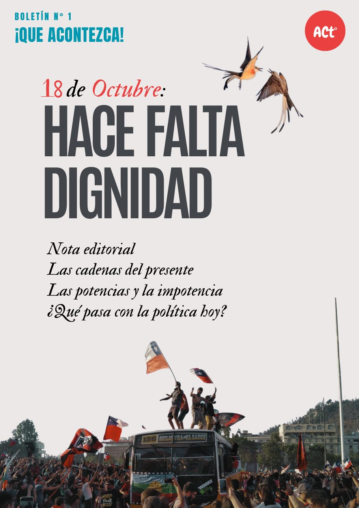
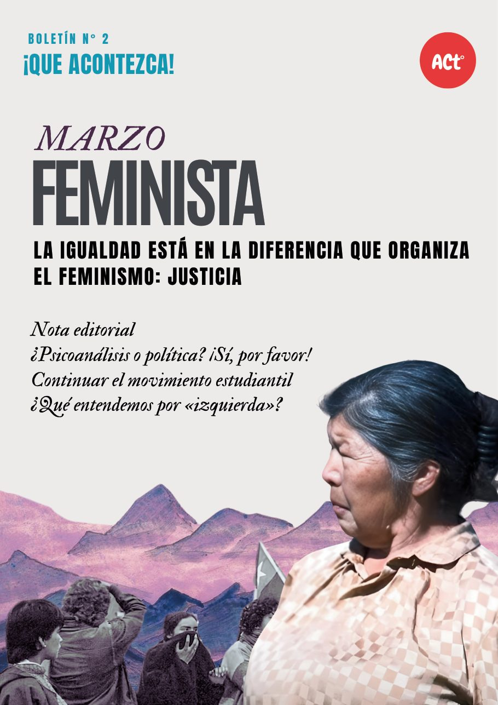
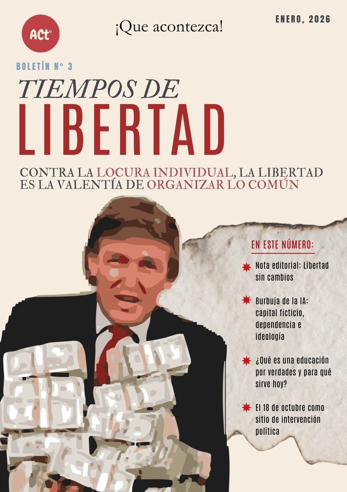

N°1 · Hace falta dignidad
El primero: el Mal y el Bien, el 18 de octubre como demostración, y «nos hace falta dignidad» como deseo organizador.
En este número:
Producción propia
Síntesis radicales de una a dos planas, semestrales: la nota editorial, los artículos y las frases para la agitación. Reproducción libre citando la fuente (CC BY 4.0).
La voz propia de la Organización Acontecimiento en su forma impresa: cada número toma un principio — dignidad, igualdad, libertad, justicia — y lo trabaja contra la coyuntura. Aquí se leen completos en línea, artículo por artículo, y se descargan en PDF para la circulación impresa. En el Correo funcionan además como una fuente más: sus artículos circulan por las secciones marcados como «voz propia».

El primero: el Mal y el Bien, el 18 de octubre como demostración, y «nos hace falta dignidad» como deseo organizador.
En este número:

¿Puede haber feminismo si no es comunista? Contra el extravío liberal: la verdadera contradicción.
En este número:

Libertad sin cambios: la trampa del capital y la izquierda. Con los cuatro desprendimientos en la contratapa.
En este número:
La justicia como axioma igualitario y la organización como su propia guía. Se anuncia aquí cuando salga.